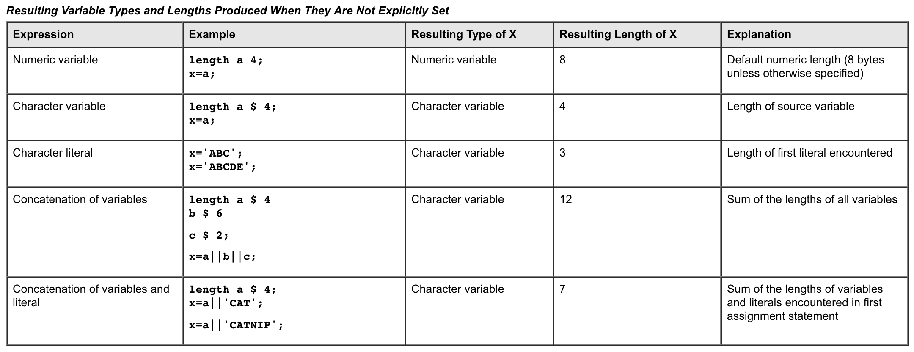
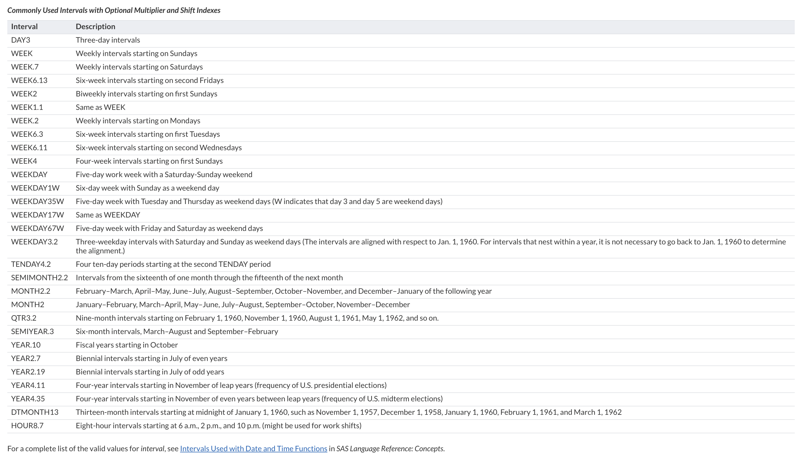

SAS基础知识点整理。
变量Length属性的设定
Variable attributes are defined when the variable is first encountered in the DATA step, a variable that is defined in a LENGTH statement (if it precedes an INPUT statement) appears first in the data set, regardless of the order of the variables in the INPUT statement.
For character variables, you must use the longest possible value in the first statement that uses the variable, because you cannot change the length with a subsequent LENGTH statement within the same DATA step. The maximum length of any character variable in SAS is 32,767 bytes. For numeric variables, you can change the length of the variable by using a subsequent LENGTH statement.
|
|
length在这里可以更改num的长度，但是无法更改id的长度，因为id是character。
In a DATA step, you can create a new variable and assign it a value by using it for the first time on the left side of an assignment statement. SAS determines the length of a variable from its first occurrence in the DATA step. The new variable gets the same type and length as the expression on the right side of the assignment statement.
When the type and length of a variable are not explicitly set, SAS gives the variable a default type and length, as shown in the examples in the following table.

If a variable appears for the first time on the right side of an assignment statement, SAS assumes that it is a numeric variable and that its value is missing. If no later statement gives it a value, SAS prints a note in the log that the variable is uninitialized.
Note: A RETAIN statement initializes a variable and can assign it an initial value, even if the RETAIN statement appears after the assignment statement.
SAS 时间函数
SAS时间函数里不容易记住的是INTCK和INTNX,因为这两个函数参数太多，不过同时也表明这两个函数很灵活,可以根据需求设置不同的multiple和shift-index,比如WEEK6.11表示每6周一个间隔的第二个星期三，其中6.11中的6是multiple，11是shife-index。具体可见这里

| Interval | Description |
|---|---|
| DAY3 | Three-day intervals |
| WEEK | Weekly intervals starting on Sundays |
| WEEK.7 | Weekly intervals starting on Saturdays |
| WEEK6.13 | Six-week intervals starting on second Fridays |
| WEEK2 | Biweekly intervals starting on first Sundays |
| WEEK1.1 | Same as WEEK |
| WEEK.2 | Weekly intervals starting on Mondays |
| WEEK6.3 | Six-week intervals starting on first Tuesdays |
| WEEK6.11 | Six-week intervals starting on second Wednesdays |
| WEEK4 | Four-week intervals starting on first Sundays |
| WEEKDAY | Five-day work week with a Saturday-Sunday weekend |
| WEEKDAY1W | Six-day week with Sunday as a weekend day |
| WEEKDAY35W | Five-day week with Tuesday and Thursday as weekend days (W indicates that day 3 and day 5 are weekend days) |
| WEEKDAY17W | Same as WEEKDAY |
| WEEKDAY67W | Five-day week with Friday and Saturday as weekend days |
| WEEKDAY3.2 | Three-weekday intervals with Saturday and Sunday as weekend days (The intervals are aligned with respect to Jan. 1, 1960. For intervals that nest within a year, it is not necessary to go back to Jan. 1, 1960 to determine the alignment.) |
| TENDAY4.2 | Four ten-day periods starting at the second TENDAY period |
| SEMIMONTH2.2 | Intervals from the sixteenth of one month through the fifteenth of the next month |
| MONTH2.2 | February–March, April–May, June–July, August–September, October–November, and December–January of the following year |
| MONTH2 | January–February, March–April, May–June, July–August, September–October, November–December |
| QTR3.2 | Nine-month intervals starting on February 1, 1960, November 1, 1960, August 1, 1961, May 1, 1962, and so on. |
| SEMIYEAR.3 | Six-month intervals, March–August and September–February |
| YEAR.10 | Fiscal years starting in October |
| YEAR2.7 | Biennial intervals starting in July of even years |
| YEAR2.19 | Biennial intervals starting in July of odd years |
| YEAR4.11 | Four-year intervals starting in November of leap years (frequency of U.S. presidential elections) |
| YEAR4.35 | Four-year intervals starting in November of even years between leap years (frequency of U.S. midterm elections) |
| DTMONTH13 | Thirteen-month intervals starting at midnight of January 1, 1960, such as November 1, 1957, December 1, 1958, January 1, 1960, February 1, 1961, and March 1, 1962 |
| HOUR8.7 | Eight-hour intervals starting at 6 a.m., 2 p.m., and 10 p.m. (might be used for work shifts) |